Digital Glitch
CRT System Startup — Project 01
Creative Brief
Core Concept
The animation presents a retro computer terminal booting up, but with signs of instability. It begins with a CRT-style power-on glow, followed by a blinking pixel, glitching visuals, and a pixelated loading sequence. After a brief scan across the screen, the system stabilizes and displays “SYSTEM ONLINE,” suggesting the machine has successfully completed its startup process.
Visual Theme
The visual style is based on classic CRT monitors and early computer terminals. A black background paired with bright green graphics creates for a strong retro aesthetic. Effects such as glow and scanlines and flickering opacity are used to simulate the imperfections of an old tube display.
Reason for Choosing the Concept
This concept was chosen because it combines a clear visual direction with a strong connection to technology and some motion graphics. It also let me dive deeper into After Effects and get more familiar with the software.
Intended Mood and Feeling
The animation is meant to feel technical, retro, and slightly unstable. The early stages of the sequence create tension through flickering and glitches, while the final “SYSTEM ONLINE” moment provides a sense of completion and stability.
Target Audience
The target audience includes viewers interested in retro technology, computer interfaces, and digital aesthetics. It would appeal to people who enjoy glitch visuals, sci-fi themes, or terminal-style graphics.
Possible Applications and Uses
This animation could be used as an intro sequence, transition, or title card in videos. It would also fit well in gaming content, tech-related media, or sci-fi projects where a system startup or digital interface is needed.
Storyboard
“These are the ideas I came up with; I want to create a glitching computer CRT that’s booting up.”
-
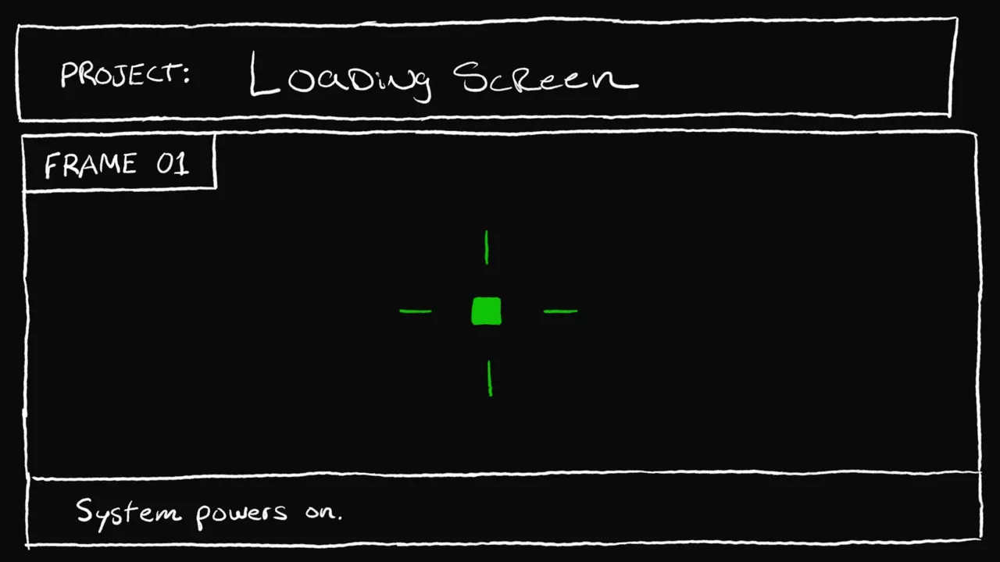
Frame 01 System Powers On
A single green pixel appears and blinks in the center of the screen, showing that the old CRT-style system is beginning to power on.
-
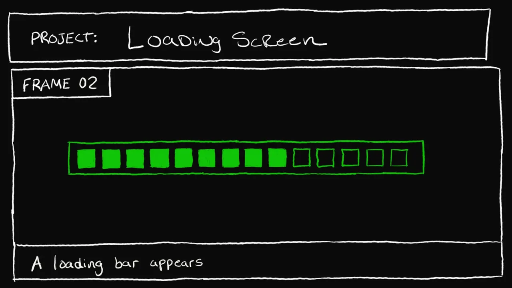
Frame 02 Loading Bar Appears
A pixelated green loading bar appears on the black screen, showing the computer starting its boot sequence.
-
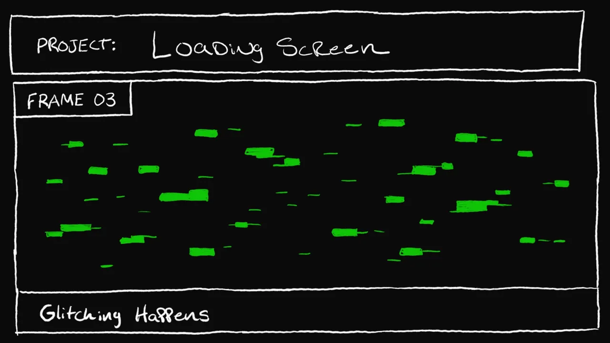
Frame 03 Glitching Happens
Scattered green glitch lines and blocks flicker across the display, suggesting the system is unstable during startup.
-
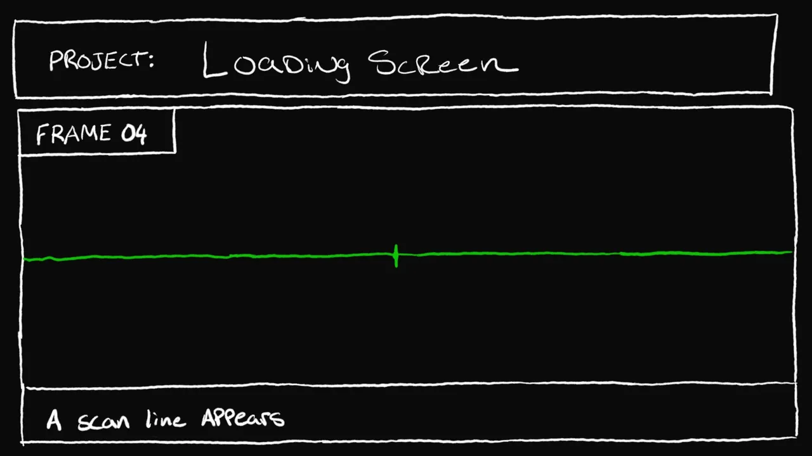
Frame 04 Scan Line Appears
A green scan line appears across the screen like a CRT or oscilloscope sweep, showing the system checking itself before coming online.
-
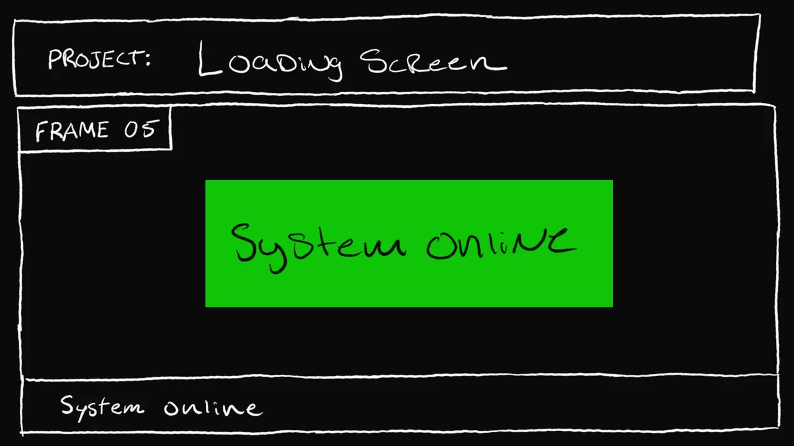
Frame 05 System Online
The “SYSTEM ONLINE” message appears, showing that the system has successfully completed its startup process.
-
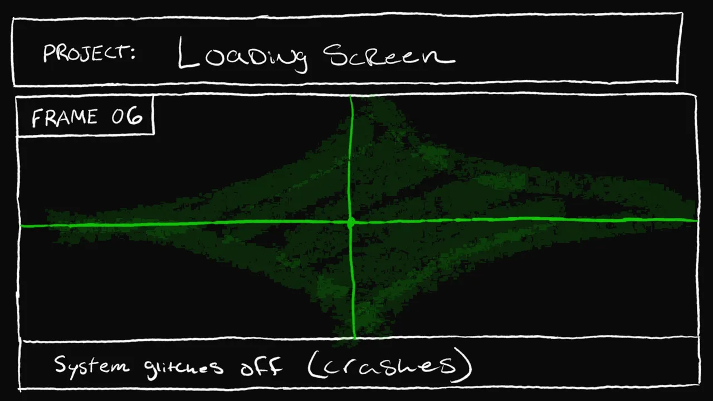
Frame 06 System Glitches Off
The screen glitches and collapses into a CRT-style shutdown effect, creating an unstable outro that matches the retro computer theme.
{kind=link}
{kind=link}
{kind=link}
{kind=link}
{kind=link}
{kind=link}
Planning & Sketches
The six storyboard frames above were sketched by hand, white and green marker on black — they double as the project’s concept sketches. The planning notes below are from the creative brief.
Main Visual Elements
Key elements include the CRT power-on glow, blinking pixel, glitch sequences, loading bar, scan line, and final text reveal. Each element represents a stage in the system startup process and contributes to the overall progression of the animation.
Animation Techniques Used
The project uses shape and text layers combined with opacity, scale, and position animation. An alpha mask is used to reveal the final text, while precomposition is used to organize the glitch sequence. Additional effects such as glow and blending modes help create the CRT appearance.
Font Choice
OCR B was selected for its structured, machine-like appearance. Its clean and readable design supports the idea of a computer-generated interface.
Color Choice
The green-on-black color scheme was chosen to reflect classic terminal displays. The bright green stands out clearly against the dark background and reinforces the retro computer theme.
Process & Decisions
New Sequence
After building the animation in After Effects, some timing and order changed slightly because the original arrangement did not feel as strong once animated. The final version keeps the same core visual beats and CRT-inspired theme, but the sequence was adjusted to make the motion feel more natural and visually balanced.
The animation follows this sequence:
- CRT glow / power-on effect
- Blinking pixel
- Glitch precomposition
- Blank screen moment
- Pixelated loading bar
- Short second glitch
- Animated scan line
- “SYSTEM ONLINE” alpha mask reveal
Challenges
One of the main challenges was creating effects that felt authentic without becoming overly complex. The CRT look required getting the glow right, while the glitch sequence needed to appear chaotic but still readable. The loading bar also needed careful timing to feel natural.
Assets Used or Created
No visual assets were imported for this project. I built the piece in After Effects using effects, layers, and animated shape layers. The frame log below shows moments from the finished animation; these are documentation stills, not source assets.
The scan line is motion-dependent, so it remains documented in storyboard Frame 04 and in the final video instead of being shown here as a nearly black still.
Final Animation Frame Log
-
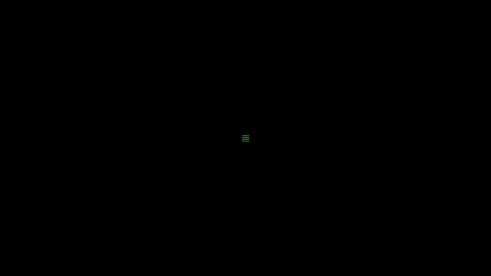
Blinking pixel The single green pixel that opens the boot sequence. -
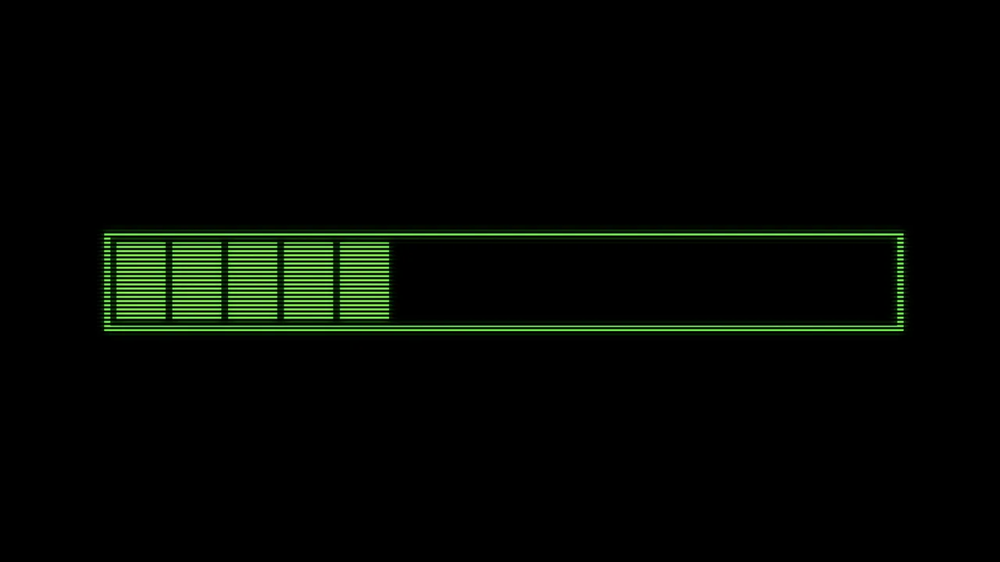
Loading bar — start The pixelated loading bar built from shape layers. -
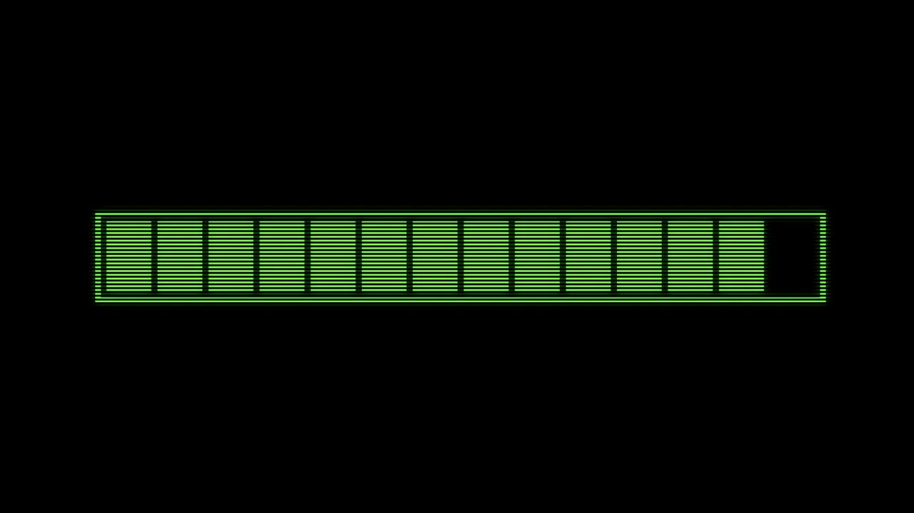
Loading bar — full Careful timing keeps the fill feeling natural. -
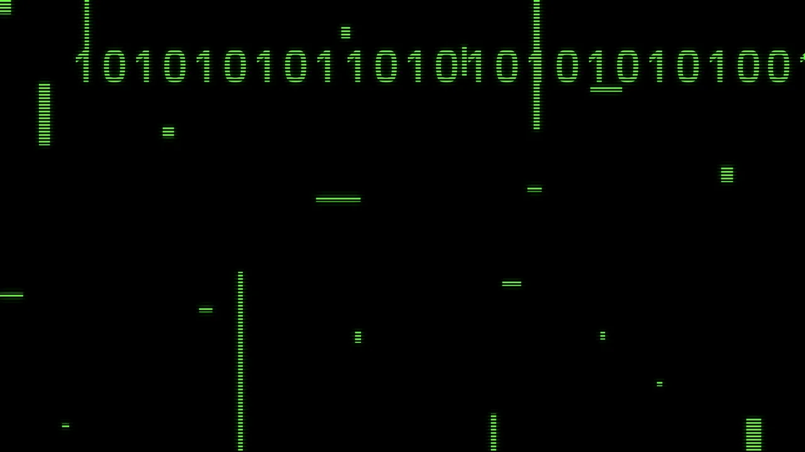
Glitch precomposition The chaotic-but-readable glitch sequence. -
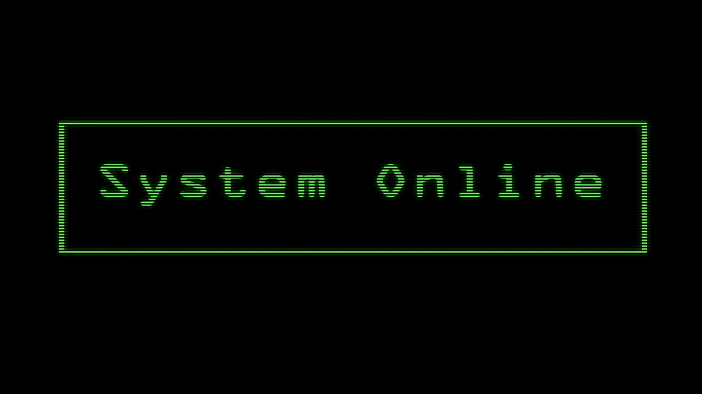
“SYSTEM ONLINE” The final alpha-mask text reveal, set in OCR B.
Project Wrap-Up
The final animation runs for 10 seconds and 13 frames, and i’m pretty proud of how it turned out.